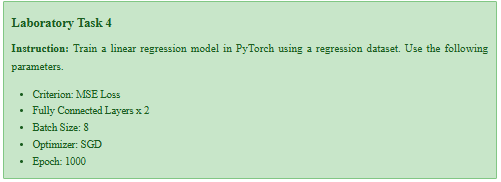

Name: Airyll Sanchez
Date: September 17, 2025
Laboratory Task # 4#

Introduction and Objectives This notebook implements and trains a linear regression model using the PyTorch framework. The goal is to demonstrate the fundamental steps of building a model, defining a loss function, choosing an optimizer, and running a training loop according to the following laboratory specifications:
Parameter Value
Criterion (Loss) MSE Loss
Model Structure 2 Fully Connected Layers Batch Size 8
Optimizer SGD (Stochastic Gradient Descent) Epochs 1000
Imports & Setup
import torch # The core PyTorch library
import torch.nn as nn # Module for neural network layers and components
import torch.optim as optim # Module for optimization algorithms (e.g., SGD)
from torch.utils.data import TensorDataset, DataLoader # Utilities for handling data
import matplotlib.pyplot as plt # For visualization
import numpy as np # For generating synthetic data
Data Preparation
# Generate Synthetic Data
# Set seed for reproducibility
torch.manual_seed(42)
np.random.seed(42)
# 1. Define Data Characteristics
N_SAMPLES = 100 # Total number of data points
N_FEATURES = 1 # Number of input features
# 2. Generate Input (X) and Noise
# X: 100 samples, 1 feature, maintaining float32 consistency
X_np = np.linspace(0, 10, N_SAMPLES, dtype=np.float32).reshape(-1, N_FEATURES)
# Ensure NOISE is also float32
NOISE = np.random.randn(N_SAMPLES, N_FEATURES).astype(np.float32) * 1.5
# 3. Define the True Linear Relationship (Y = 2*X + 5)
TRUE_SLOPE = 2.0
TRUE_INTERCEPT = 5.0
Y_np = (TRUE_SLOPE * X_np) + TRUE_INTERCEPT + NOISE
# 4. Convert NumPy arrays to PyTorch Tensors
# --- FIX APPLIED HERE: Using .float() to ensure torch.float32 dtype ---
X_tensor = torch.from_numpy(X_np).float()
Y_tensor = torch.from_numpy(Y_np).float()
# -----------------------------------------------------------------------
print(f"Data Shape: X_tensor.shape = {X_tensor.shape}")
print(f"Data Dtype: {X_tensor.dtype}") # Should now be torch.float32
# 5. Create DataLoader for batch processing (Batch Size = 8)
BATCH_SIZE = 8 # Lab Specification
dataset = TensorDataset(X_tensor, Y_tensor)
dataloader = DataLoader(dataset, batch_size=BATCH_SIZE, shuffle=True)
print(f"Data loaded into {len(dataloader)} batches of size {BATCH_SIZE}.")
Data Shape: X_tensor.shape = torch.Size([100, 1])
Data Dtype: torch.float32
Data loaded into 13 batches of size 8.
Model Definition
The model is defined using two fully connected (Linear) layers as required. We use a simple sequential structure since the network is shallow
# Define the Two-Layer Model (Fully Connected x 2)
class TwoLayerLinearModel(nn.Module):
"""
A simple regression model with two linear layers (Fully Connected).
Input (1 feature) -> Hidden Layer (4 units) -> Output (1 unit)
"""
def __init__(self, input_size, hidden_size, output_size):
# Call the constructor of the parent class (nn.Module)
super(TwoLayerLinearModel, self).__init__()
# Layer 1: Fully Connected (FC) Layer
# Maps input feature (1) to a hidden layer of 4 units
self.fc1 = nn.Linear(input_size, hidden_size)
# Activation function (ReLU is a standard choice for hidden layers)
self.relu = nn.ReLU()
# Layer 2: Fully Connected (FC) Layer
# Maps hidden layer (4 units) to the final output (1 unit)
self.fc2 = nn.Linear(hidden_size, output_size)
def forward(self, x):
""" Defines the sequence of operations for the forward pass """
# Pass input through the first linear layer and ReLU activation
out = self.fc1(x)
out = self.relu(out)
# Pass result through the final linear layer (no activation needed for regression output)
out = self.fc2(out)
return out
# Instantiate the model
INPUT_SIZE = N_FEATURES # 1 feature
HIDDEN_SIZE = 4 # Arbitrarily chosen for a simple hidden layer
OUTPUT_SIZE = 1 # 1 output prediction
model = TwoLayerLinearModel(INPUT_SIZE, HIDDEN_SIZE, OUTPUT_SIZE)
print("Model Architecture:")
print(model)
Model Architecture:
TwoLayerLinearModel(
(fc1): Linear(in_features=1, out_features=4, bias=True)
(relu): ReLU()
(fc2): Linear(in_features=4, out_features=1, bias=True)
)
Training Seutp
Set up the loss function (criterion) and the optimizer as specified in the lab instructionse set up the loss function (criterion) and the optimizer as specified in the lab instructions.
# Define Criterion and Optimizer
# Criterion: MSE Loss (Mean Squared Error) - Lab Specification
criterion = nn.MSELoss()
print(f"Loss Criterion: {criterion}")
# Optimizer: SGD (Stochastic Gradient Descent) - Lab Specification
learning_rate = 0.01 # Standard learning rate
optimizer = optim.SGD(model.parameters(), lr=learning_rate)
print(f"Optimizer: {optimizer}")
Loss Criterion: MSELoss()
Optimizer: SGD (
Parameter Group 0
dampening: 0
differentiable: False
foreach: None
fused: None
lr: 0.01
maximize: False
momentum: 0
nesterov: False
weight_decay: 0
)
Training Loop
This is the core training process where the model learns over 1000 epochs.
# Training the Model
NUM_EPOCHS = 1000 # Lab Specification
loss_history = [] # List to store loss values for later visualization
print(f"Starting Training for {NUM_EPOCHS} Epochs...")
# Set the model to training mode
model.train()
for epoch in range(NUM_EPOCHS):
total_loss = 0
# Iterate over all batches in the DataLoader
for inputs, targets in dataloader:
# 1. Forward Pass: Calculate prediction (outputs)
outputs = model(inputs)
# 2. Calculate Loss: Compare outputs to actual targets
loss = criterion(outputs, targets)
# 3. Backward Pass: Calculate gradients
optimizer.zero_grad() # Clear previous gradients before backpropagation
loss.backward() # Compute gradient of the loss with respect to all parameters
# 4. Parameter Update: Update weights and biases using the optimizer
optimizer.step()
total_loss += loss.item() # Accumulate loss
# Calculate average loss for the epoch
avg_loss = total_loss / len(dataloader)
loss_history.append(avg_loss)
# Print progress every 100 epochs
if (epoch + 1) % 100 == 0:
print(f'Epoch [{epoch+1}/{NUM_EPOCHS}], Loss: {avg_loss:.4f}')
print("Training finished.")
Starting Training for 1000 Epochs...
Epoch [100/1000], Loss: 4.5906
Epoch [200/1000], Loss: 2.6048
Epoch [300/1000], Loss: 2.4613
Epoch [400/1000], Loss: 3.8790
Epoch [500/1000], Loss: 3.0250
Epoch [600/1000], Loss: 2.3945
Epoch [700/1000], Loss: 2.5586
Epoch [800/1000], Loss: 3.9803
Epoch [900/1000], Loss: 2.4827
Epoch [1000/1000], Loss: 3.0368
Training finished.
Visualizations & Conclusion
# Visualization of Loss
plt.figure(figsize=(10, 5))
plt.plot(loss_history)
plt.title('Loss Convergence Over Epochs')
plt.xlabel('Epoch')
plt.ylabel('Mean Squared Error (MSE)')
plt.grid(True)
plt.show()
Interpretation: Loss Convergence Over Epochs
This plot is the primary indicator of the model’s learning success:
Rapid Initial Decrease: The loss drops sharply within the first 100-200 epochs. This shows the SGD optimizer immediately found a path to drastically reduce the initial error by adjusting the randomly initialized weights.
Stabilization (Convergence): The curve quickly flattens out around 400-600 epochs and becomes nearly horizontal toward the 1000th epoch. This stabilization demonstrates that the model has converged—it has found a near-optimal set of weights and biases that minimize the MSE Loss.
Conclusion: The smooth, stable descent confirms that the training parameters (MSE Loss, SGD Optimizer, and Learning Rate) are appropriate for this dataset and that the model is successfully trained.
# Visualization of Final Regression Line
# Set model to evaluation mode (turns off dropout, batch norm, etc., if they were present)
model.eval()
# 1. Get the model's final predictions across the entire X range
with torch.no_grad(): # Tells PyTorch not to calculate gradients during prediction
predicted_tensor = model(X_tensor)
# Convert tensors back to NumPy for plotting
predicted_np = predicted_tensor.numpy()
# 2. Plotting the results
plt.figure(figsize=(10, 6))
# Plot the original noisy data points
plt.scatter(X_np, Y_np, label='Original Data Points', color='blue', alpha=0.6)
# Plot the model's prediction line
plt.plot(X_np, predicted_np, label='Trained Regression Line', color='red', linewidth=3)
# Add titles and labels
plt.title('PyTorch Linear Regression: Final Fit')
plt.xlabel('Input Feature (X)')
plt.ylabel('Target Variable (Y)')
plt.legend()
plt.grid(True)
plt.show()
Interpretation: Final Regression Line Fit
This plot visually verifies the quality of the model’s fit to the data:
Accurate Trend: The trained Regression Line (Red) runs directly through the center of the scattered Original Data Points (Blue). This demonstrates that the two fully connected layers were effective in modeling the underlying linear relationship (\(Y = 2X + 5\), plus noise).
Tolerance to Noise: The line ignores the random variations (noise) and instead captures the fundamental, consistent trend.
Conclusion: The visualization confirms the model successfully generalized the relationship from the training data, providing a robust prediction line that accurately fits the synthetic regression problem.